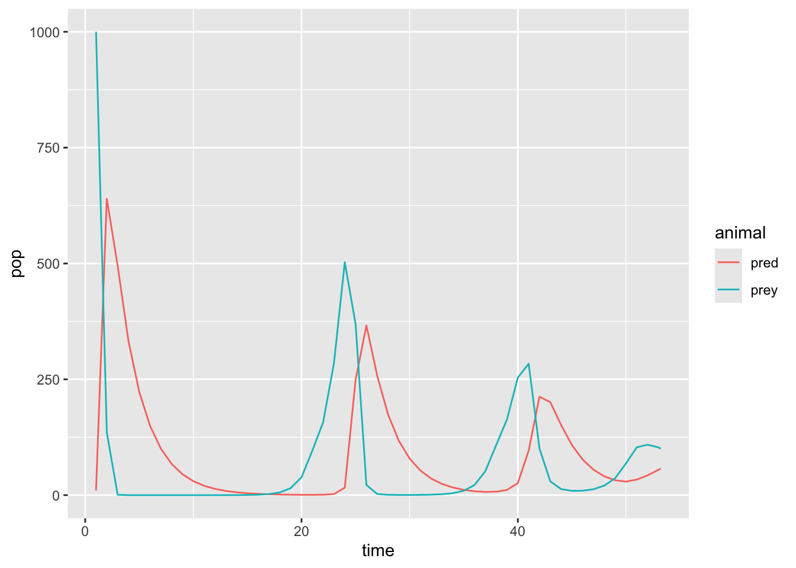

library(sensitivity)
library(here)
library(tidyverse)
library(deSolve)Hunting
Hunting Assignment
Part 1
Include hunting in function:
source("R/hunting.R")Part 2
Try different hunting values: which ones give stable prey population?
Stability: We define stability as no fluctuations in the prey population after 1 year. Graphically, the prey population will flatten out. We compared the graphs from 6 different scenarios to determind which vales for min_prey_hunt and hunt_rate created stability.
Initial conditions:
# note the use of with
# initial conditions
currpop <- c(prey = 1000, pred = 10)
# 2 years
years <- seq(from = 1, to = 2*365, by = 1)Scenario 1:
min_prey_hunt: 0hunt_rate: 50
# set parameters for scenario 1
pars <- c(rprey = 0.95, alpha = 0.01, eff = 0.6, pmort = 0.4, K = 2000, min_prey_hunt = 0, hunt_rate = 50)
# run the model
res <- ode(func = hunting, y = currpop, times = years, parms = pars)
# graph the results
head(res) time prey pred
[1,] 1 1.000000e+03 10.0000
[2,] 2 1.348207e+02 639.6737
[3,] 3 3.817917e-01 488.1085
[4,] 4 6.490365e-03 327.3513
[5,] 5 4.157902e-04 219.4328
[6,] 6 6.477075e-05 147.0904# rearrange for easy plotting
resl <- as.data.frame(res) %>% pivot_longer(-time, names_to = "animal", values_to = "pop")
p1 <- ggplot(resl, aes(time, pop, col = animal)) +
geom_line()
p1
Scenario 2:
min_prey_hunt: 100hunt_rate: 50
# set parameters for scenario 2
pars <- c(rprey = 0.95, alpha = 0.01, eff = 0.6, pmort = 0.4, K = 2000, min_prey_hunt = 100, hunt_rate = 50)
# run the model
res <- ode(func = hunting, y = currpop, times = years, parms = pars)DLSODA- At current T (=R1), MXSTEP (=I1) steps
taken on this call before reaching TOUT
In above message, I1 = 5000
In above message, R1 = 53.2125
Warning in lsoda(y, times, func, parms, ...): an excessive amount of work (>
maxsteps ) was done, but integration was not successful - increase maxstepsWarning in lsoda(y, times, func, parms, ...): Returning early. Results are
accurate, as far as they go# graph the results
head(res) time prey pred
[1,] 1 1.000000e+03 10.0000
[2,] 2 1.348207e+02 639.6737
[3,] 3 9.111996e-01 495.1910
[4,] 4 3.960683e-02 332.4290
[5,] 5 6.612189e-03 222.8564
[6,] 6 2.723885e-03 149.3888# rearrange for easy plotting
resl <- as.data.frame(res) %>% pivot_longer(-time, names_to = "animal", values_to = "pop")
p2 <- ggplot(resl, aes(time, pop, col = animal)) +
geom_line()
p2Scenario 3:
min_prey_hunt: 500hunt_rate: 50
# set parameters for scenario 3
pars <- c(rprey = 0.95, alpha = 0.01, eff = 0.6, pmort = 0.4, K = 2000, min_prey_hunt = 500, hunt_rate = 50)
# run the model
res <- ode(func = hunting, y = currpop, times = years, parms = pars)
# graph the results
head(res) time prey pred
[1,] 1 1.000000e+03 10.0000
[2,] 2 1.413256e+02 643.8712
[3,] 3 9.019539e-01 502.3513
[4,] 4 3.695904e-02 337.2223
[5,] 5 5.931217e-03 226.0679
[6,] 6 2.379564e-03 151.5412# rearrange for easy plotting
resl <- as.data.frame(res) %>% pivot_longer(-time, names_to = "animal", values_to = "pop")
p3 <- ggplot(resl, aes(time, pop, col = animal)) +
geom_line()
p3
Scenario 4:
min_prey_hunt: 500hunt_rate: 100
# set parameters for scenario 4
pars <- c(rprey = 0.95, alpha = 0.01, eff = 0.6, pmort = 0.4, K = 2000, min_prey_hunt = 500, hunt_rate = 100)
# run the model
res <- ode(func = hunting, y = currpop, times = years, parms = pars)
# graph the results
head(res) time prey pred
[1,] 1 1.000000e+03 10.0000
[2,] 2 1.494387e+02 621.0510
[3,] 3 1.107250e+00 491.5790
[4,] 4 4.953543e-02 330.1146
[5,] 5 8.428623e-03 221.3107
[6,] 6 3.516686e-03 148.3537# rearrange for easy plotting
resl <- as.data.frame(res) %>% pivot_longer(-time, names_to = "animal", values_to = "pop")
p4 <- ggplot(resl, aes(time, pop, col = animal)) +
geom_line()
p4Scenario 5:
min_prey_hunt: 500hunt_rate: 500
# set parameters for scenario 5
pars <- c(rprey = 0.95, alpha = 0.01, eff = 0.6, pmort = 0.4, K = 2000, min_prey_hunt = 500, hunt_rate = 500)
# run the model
res <- ode(func = hunting, y = currpop, times = years, parms = pars)DLSODA- At current T (=R1), MXSTEP (=I1) steps
taken on this call before reaching TOUT
In above message, I1 = 5000
In above message, R1 = 19.3453
Warning in lsoda(y, times, func, parms, ...): an excessive amount of work (>
maxsteps ) was done, but integration was not successful - increase maxstepsWarning in lsoda(y, times, func, parms, ...): Returning early. Results are
accurate, as far as they go# graph the results
head(res) time prey pred
[1,] 1 1.000000e+03 10.0000
[2,] 2 2.182239e+02 439.2970
[3,] 3 5.275218e+00 411.1462
[4,] 4 4.491092e-01 278.5433
[5,] 5 1.166955e-01 186.9699
[6,] 6 6.459364e-02 125.3927# rearrange for easy plotting
resl <- as.data.frame(res) %>% pivot_longer(-time, names_to = "animal", values_to = "pop")
p5 <- ggplot(resl, aes(time, pop, col = animal)) +
geom_line()
p5Prey population stabilizes after about a year with Scenarios 3 an 4 (min_prey_hunt = 500, hunt_rate = 50 and min_prey_hunt = 500, hunt_rate = 100). This shows that min_prey_hunt performs best around 25% of carrying capacity, and hunt_rate performs well at 10-20% of min_prey_hunt.